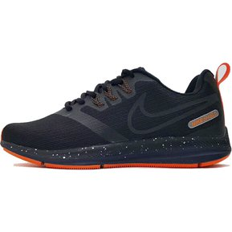

| Tipos de Zapato | Talla | Color |
|---|---|---|
| Deportivo | 40 | rojo |
| Casual | 38 | Amarillo |
| De gala | 41 | negro |
| De Oficina | 36 | Cafe | Cantidad | 4 tallas diferentes | 4 colores diferentes |
|  |
|---|
Todos sabemos que los zapatos son un articulo importante de vestir,y a la hora de escoger este accesorio todos escogemos un estilo diferente acorde a nuestro gusto,en esta pagina encontraras algunos de los estilos mas utilizados en la moda masculina, como ejemplo de esto los zapatos deportivos nos hacen lucir bien en el momento que nos ejercitamos o cuando decidimos caminar por un largo lapso de tiempo debido a que son muy comodos,los zapatos casuales y los de Oficina generalmente los usamos mientras trabajamos o salimos con alguien,espero que esta pagina sea de tu agrado.